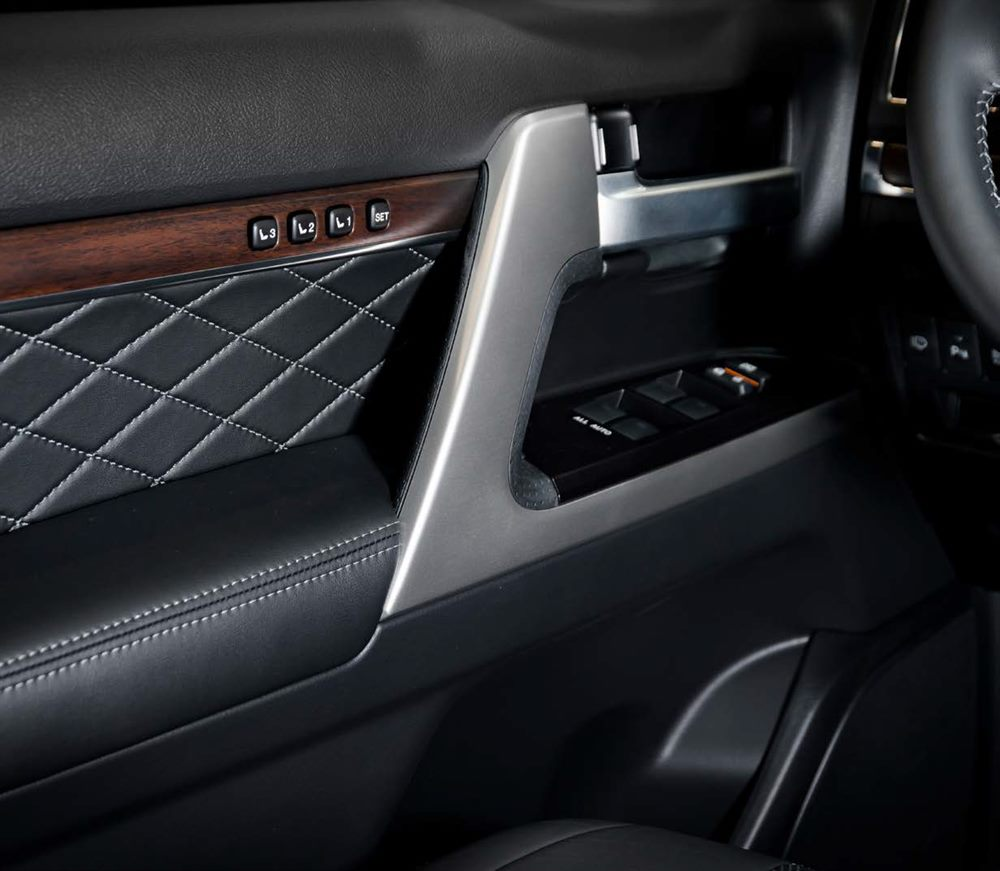
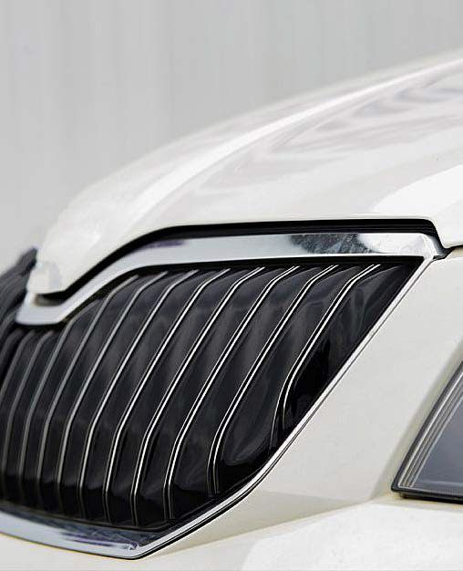
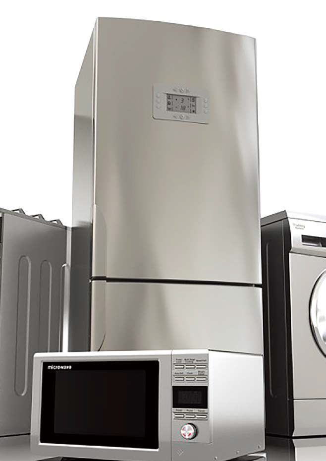

WOOJIN PLAIMM Co., Ltd. · przedstawicielstwo w Polsce
Wtryskarki, które formują przyszłość.
WOOJIN PLAIMM to światowy lider w dziedzinie maszyn do formowania wtryskowego. Od ponad 50 lat dostarczamy nowoczesne, niezawodne i precyzyjne rozwiązania dla przemysłu tworzyw sztucznych — z pełnym wsparciem na każdym etapie współpracy.
- od 1985
- na rynku maszyn wtryskowych
- 50–4300 t
- zakres siły zwarcia
- 7 serii
- wtryskarek w ofercie
O nas
50 lat nieprzerwanego sukcesu
Założona w 1985 roku Woojin Plaimm stała się liderem w branży formowania wtryskowego, cenionym za innowacyjność, precyzję i zaangażowanie w jakość. Dzięki ponad pięciu dekadom doświadczenia firma nieustannie przekracza granice technologii, dostarczając wydajne rozwiązania, które budują zaufanie klientów na całym świecie.
Innowacyjność
Technologie łączące nowoczesność z wydajnością produkcji.
Precyzja
Powtarzalna jakość wyprasek w każdej serii produkcyjnej.
Pełne wsparcie
Doradztwo i serwis na każdym etapie współpracy.
Zastosowania serii A5
Optymalne rozwiązania dla każdej branży
Wtryskarki WOOJIN PLAIMM serii A5 są szeroko stosowane w produkcji dla motoryzacji, AGD i elektroniki, kosmetyki i wielu innych branż. Zapewniamy optymalne rozwiązania do produkcji najróżniejszych wyrobów z tworzyw sztucznych.
-

WOOJIN PLAIMMMotoryzacja – wnętrze
Panele drzwi, konsole i elementy deski rozdzielczej o wysokiej jakości powierzchni.
-

WOOJIN PLAIMMMotoryzacja – nadwozie
Atrapy chłodnicy, zderzaki i osłony – duże detale o precyzyjnej geometrii.
-
WOOJIN PLAIMM
Elektronika
Obudowy urządzeń, złącza i drobne elementy wymagające dokładności co do setnych milimetra.
-

WOOJIN PLAIMMAGD
Obudowy, panele sterowania i elementy wewnętrzne pralek, lodówek i kuchenek.
-
WOOJIN PLAIMM
Kosmetyki i opakowania
Opakowania, zakrętki i pompki produkowane szybko, powtarzalnie i z dbałością o estetykę.
Serie maszyn
Siedem serii. Jeden standard jakości.
Od kompaktowych wtryskarek elektrycznych po wielkogabarytowe maszyny dwupłytowe o sile zwarcia do 4300 ton. Wybierz serię, aby obejrzeć ją w widoku 360°.
-
 Dwupłytowa · Dual Lock
Dwupłytowa · Dual LockDL-A5
Premium, energooszczędna wtryskarka z systemem podwójnego ryglowania — do dużych, precyzyjnych wyprasek wymagających wysokiej siły zwarcia.Dwupłytowa, energooszczędna — do dużych, precyzyjnych wyprasek.
Siła zwarcia450–4300 t -
 Hydrauliczna
HydraulicznaTH-A5
Energooszczędna wtryskarka hydrauliczna o dużej sztywności konstrukcji i wysokiej powtarzalności procesu wtrysku.Sztywna, energooszczędna hydraulika o powtarzalnym wtrysku.
Siła zwarcia130–480 t -
Model 3D
 W pełni elektryczna
W pełni elektrycznaTE-A5
Najwyższa precyzja i powtarzalność wagi wypraski przy najniższym możliwym zużyciu energii.Najwyższa precyzja przy minimalnym zużyciu energii.
Siła zwarcia50–850 t -
 Bezkolumnowa
BezkolumnowaTL-A5
Wtryskarka bez kolumn (tie-bar-less), dająca pełną swobodę doboru wielkości formy, wielogniazdowości i automatyzacji.Bez kolumn — pełna swoboda doboru formy i automatyzacji.
Siła zwarcia220–400 t -
 Pionowa
PionowaVHA-RS
Pionowa wtryskarka hydrauliczna ze stołem obrotowym, przeznaczona do formowania z insertami.Pionowa, ze stołem obrotowym — do formowania z insertami.
Siła zwarcia50–100 t -
 Dwukolorowa · 2K
Dwukolorowa · 2KMULTI
Formowanie dwóch różnych tworzyw lub kolorów w jednym cyklu produkcyjnym (ONE-CYCLE).Dwa tworzywa lub kolory w jednym cyklu.
Siła zwarcia130–400 t -
 Super spienianie
Super spienianieSuper-Foam
Dwupłytowa wtryskarka z technologią super spieniania do produkcji dużych, lekkich elementów, w tym palet.Super spienianie dużych, lekkich elementów, np. palet.
Siła zwarcia500–3300 t
Skonfiguruj swoją wtryskarkę w kilka minut
Wybierz typ maszyny, podaj dane techniczne swojego procesu produkcyjnego i od razu zobacz dopasowaną konfigurację — w pełni online. Nasz przedstawiciel skontaktuje się z Tobą w ciągu 15 minut.
Technologia WOOJIN PLAIMM
Moc, precyzja i pełna automatyzacja
Nasze wtryskarki napędzają nowoczesną produkcję tworzyw sztucznych — od w pełni elektrycznych maszyn TE-A5, przez uniwersalne konstrukcje TH-A5 i TL-A5, po wielkogabarytowe wtryskarki dwupłytowe serii DL-A5.
Poznaj TE-A5 w 3D
Obracaj model i zajrzyj pod obudowę w trybie X-RAY. Kliknij numerowane znaczniki, aby poznać najważniejsze rozwiązania ultra energooszczędnej, w pełni elektrycznej serii WOOJIN PLAIMM TE-A5 (50–850 t).
Twoja przeglądarka nie obsługuje grafiki 3D (WebGL) – pokazujemy zdjęcie maszyny.
Kontakt
Porozmawiajmy o Twojej produkcji.
Pomożemy dobrać wtryskarkę do Twojego procesu — skontaktuj się z naszym przedstawicielem lub skorzystaj z konfiguratora online.